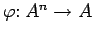
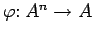

Inhalt Index DeskTop Bronstein

 Algebra und Diskrete Mathematik Klassische algebraische Strukturen Operationen
Algebra und Diskrete Mathematik Klassische algebraische Strukturen Operationen


Der Strukturbegriff spielt in der Mathematik und ihren Anwendungen eine zentrale Rolle. Hier sollen algebraische Strukturen behandelt werden, d.h. Mengen, auf denen Operationen erklärt sind. Eine n-stellige Operation  in einer Menge A ist eine Abbildung , die jedem n-Tupel von Elementen aus A wieder ein Element aus A zuordnet.
in einer Menge A ist eine Abbildung , die jedem n-Tupel von Elementen aus A wieder ein Element aus A zuordnet.